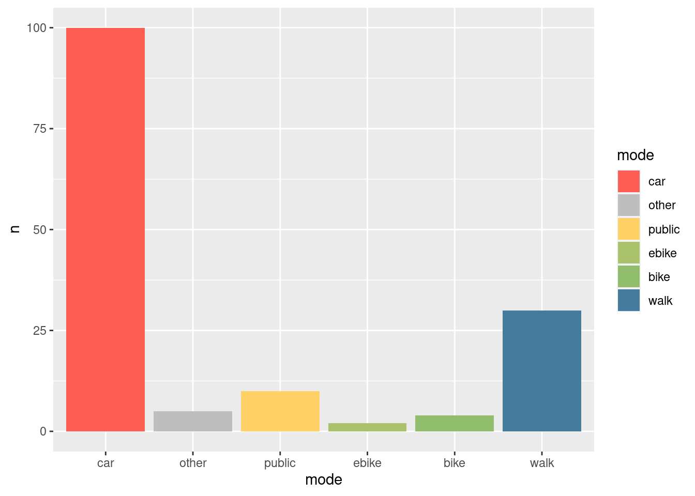

{
"full": {
"car": ["#fe5f55"],
"other": ["#BEBEBE"],
"public": ["#ffd166"],
"ebike": ["#A9C26B"],
"bike": ["#90be6d"],
"walk": ["#457b9d"]
},
"main": {
"walk": ["#457b9d"],
"bike": ["#90be6d"],
"other": ["#BEBEBE"],
"car": ["#fe5f55"]
},
"no_transit": {
"walk": ["#457b9d"],
"bike": ["#90be6d"],
"other": ["#BEBEBE"]
},
"no_other": {
"walk": ["#457b9d"],
"bike": ["#90be6d"],
"public": ["#ffd166"]
}
} Using linear interpolation the palette can be expanded to cover many modes. Following the example from Simon, we can create plot of car manufacturers with colors adjusting between the main colours as follows.
Although the figure is not supposed to be realistic (are Volkswagens really closer to walking than Audis?!) it highlights an important point: mode of transport can be seen as a continuous variable from high speed/weight/power to active modes such as walking. An electric cargo bike is somewhere between a ‘normal’ bike and public/private transport options. Thus we can expand the palette:

The above shows the importance of selecting good colours for modes.